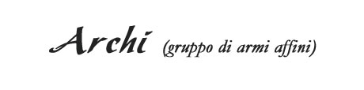
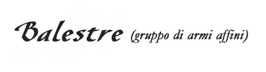
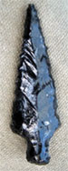
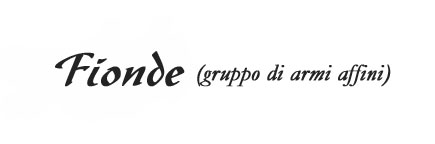
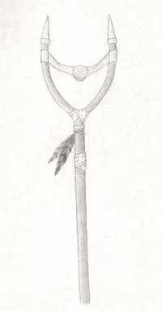
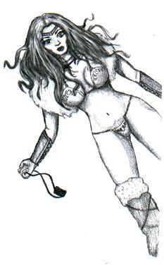

Le armi appartenenti ai vari gruppi (archi, balestre. fionde, ecc...) sono considerate fra loro armi affini mentre quelle appartenenti al medesimo sottogruppo (archi corti, ecc...) sono considerate armi gemelle.

Gli archi corti possono utilizzare solo frecce da caccia, quelli lunghi anche frecce da guerra. Indipendentemente dalla freccia utilizzata tutti gli archi hanno una cadenza di tiro pari a 2 frecce al round se il tiratore resta fermo (che scende ad 1 freccia al round se il personaggio effettua mezzo movimento prima di scoccare).
Archi Corti (sottogruppo di armi gemelle)
|
TIPO DI ARMA |
FORZA | COSTITUZIONE | DESTREZZA |
| Arco Corto (1.2) | 11 | 9 | 11 |
| Arco Corto Composito (1.3) | 12 | 10 | 11 |
|
TIPO DI ARMA |
COSTO BASE | DIMENSIONI | INIZIATIVA |
| Arco Corto | 30 g.p. | M (2 lbs.) | +7 (+2 se incoccato) |
| Arco Corto Composito | 60 g.p. | M (2 lbs.) | +6 (+2 se incoccato) |
| Proiettile | Gittata corta | Gittata media (-2 Thac0) | Gittata lunga (-5 Thac0) |
| Arco corto freccia da caccia | 45 metri | 90 metri | 120 metri |
| Arco corto comp. freccia da caccia | 51 metri | 102 metri | 150 metri |
Archi Lunghi (sottogruppo di armi gemelle)
|
TIPO DI ARMA |
FORZA | COSTITUZIONE | DESTREZZA |
| Arco Lungo (1.25) | 13 | 11 | 12 |
| Arco Lungo Composito (1.35) | 14 | 12 | 13 |
|
TIPO DI ARMA |
COSTO BASE | DIMENSIONI | INIZIATIVA |
| Arco Lungo | 75 g.p. | L (3 lbs.) | +8 (+2 se incoccato) |
| Arco Lungo Composito | 100 g.p. | L (3 lbs.) | +7 (+2 se incoccato) |
| Proiettile | Gittata corta | Gittata media (-2 Thac0) | Gittata lunga (-5 Thac0) |
| Arco lungo freccia da caccia | 51 | 102 | 180 |
| Arco lungo comp. freccia caccia | 60 | 120 | 210 |
| Arco lungo freccia da guerra | 36 | 72 | 105 |
| Arco lungo comp. freccia guerra | 48 | 96 | 165 |
Le frecce e le faretre
 |
Quando si utilizza una freccia vi è una certa possibilità che la stessa si rompa. Si tiri 1d6 per determinare se la freccia si è rotta. Le frecce da caccia si romperanno con un risultato pari a 4+ mentre quelle da guerra con un risultato pari a 5+. Le frecce sono contenute in faretre. Una faretra può contenere fino a 12 frecce da caccia, una freccia da guerra occupa spazio pari ad 1,5 frecce da caccia (per cui in una faretra potranno entrare fino a 8 frecce da guerra). Una faretra ha un costo pari a 3 corone e pesa 2 libbre e si considera un oggetto di taglia media che può essere, quindi, posizionato anche sulle spalle. |
|
PROIETTILI |
DANNO |
| Freccia da caccia (1/10 lbs.) | 1-4+1 |
| Freccia da guerra (1,5/10 lbs.) | 1-6+1 |
| Proiettile | Comuni | Buone | Eccellenti | Superbe |
| Freccia da caccia | 0.07 g.p. | 0.28 g.p. | 0.56 g.p. | 1.05 g.p. |
| Freccia da guerra | 0.2 g.p. | 0.8 g.p. | 1.6 g.p. | 3 g.p. |
Tecniche di combattimento specifiche per gli archi
Utilizzando gli archi è
possibile effettuare le seguenti manovre di
combattimento. Tali manovre, non richiedendo punti combattimento, possono essere cumulate con i vari colpi di combattimento
generali e speciali. In ogni caso, è
possibile utilizzare, durante un intero round di combattimento, solo una delle seguenti manovre.
Si
noti che gli elfi dispongono di ulteriori manovre di combattimento con l'arco,
queste manovre si aggiungono alle seguenti fermo restando il limite di un unica
manovra al round.
Incoccare un arco (Abilità
minima: Abile)
Incoccare un arco è un'azione che richiede un round, nel quale l'arciere incocca e tende l'arco senza però lanciare alcuna freccia. Una volta incoccato l'arciere dovrà tenere l'arco teso e nel round seguente potrà lanciare la prima freccia molto rapidamente utilizzando il previsto fattore iniziativa. Se l'arciere vuole continuare a mantenere incoccato l'arco per ulteriori rounds deve effettuare ad inizio round una prova di forza (alla quale si addizionerà per ogni prova successiva una penalità crescente di -1), qualora questa prova fallisca l'arciere non può tenere l'arco teso e potrà frecciare solo con la normale iniziativa dell'arco, dovrà attendere il round successivo, inoltre, per incoccare nuovamente l'arco. Si noti che i round in cui si tiene l'arco incoccato si considerano round di fatica.
Tiro di precisione (Abilità minima: Esperto)
L'arciere che possa tirare due frecce nel round può decidere di sacrificare la prima freccia per mirare l'avversario e ottenere un bonus di +1 al tiro per colpire con la freccia di fine round.
Volley (Abilità minima: Campione)
L'arciere decide di tirare una freccia supplementare nel round (si cumula con un eventuale attacco extra). Ogni freccia lanciata subirà una penalità al tiro per colpire crescente di -1. (La prima frecce ha una penalità al tiro per colpire di -1, la seconda subisce una penalità di -2, la terza subisce una penalità di -3, ecc...).

Le balestre non appartengono ad alcun sottogruppo comune (non esistono quindi balestre considerabili fra loro armi gemelle). Tutte le balestre hanno una cadenza di tiro pari ad un dardo al round.
 |
TIPO DI ARMA | FORZA | COSTITUZIONE | DESTREZZA |
| Balestra da mano (1.1) | 7 | 7 | 11 | |
| Balestra leggera (1) | 10 | 8 | 9 | |
| Balestra pesante (1.1) | 13 | 12 | 9 | |
| TIPO DI ARMA | COSTO BASE | DIMENSIONI | INIZIATIVA | |
| Balestra da mano | 300 g.p. | S (3 lbs.) | +5 (+1 colpo carico) | |
| Balestra leggera | 35 g.p. | M (7 lbs.) | +7 (+2 colpo carico) | |
| Balestra pesante | 50 g.p. | L (14 lbs.) | +12 (+3 colpo carico) |
I dardi e gli astucci
Quando si utilizza un dardo da balestra vi è una certa possibilità che lo stesso si rompa. Si tiri 1d6 per determinare se il dardo si è rotto. I dardi da mano si romperanno con un risultato pari a 4+, i dardi leggeri si romperanno con un risultato pari a 5+, mentre i dardi pesanti si romperanno solo con un risultato pari a 6.
I dardi da balestra sono
contenuti in astucci. Per la loro forma e la modalità di caricamento delle
balestre gli astucci non possono essere usati efficacemente se indossati a
tracolla sulle spalle ma sono portati al fianco appesi alla cintura. Per ogni
tipo di dardo esiste un diverso astuccio.
- L'astuccio per dardi da mano contiene fino a 15 dardi ed ingombra come una
tasca piccola da cintura; ha un costo di 2 corone ed un peso di 1/2 libbra.
- L'astuccio per dardi leggeri contiene fino a 10 dardi ed ingombra come una
tasca piccola da cintura; ha un costo di 3 corone ed un peso di 1 libbre.
- L'astuccio per dardi pesanti contiene fino a 6 dardi ed ingombra come una
tasca piccola da cintura; ha un costo di 5 corone ed un peso di 1,5 libbre.
| Proiettile | Gittata corta | Gittata media (-2 Thac0) | Gittata lunga (-5 Thac0) |
| Dardo da mano (1d4 danni) [peso 1/10 libbra] | 18 metri | 36 metri | 54 metri |
| Dardo leggero (1d6+1 danni) [peso 1,5/10 libbra] | 51 metri | 102 metri | 180 metri |
| Dardo pesante (1d8+1 danni) [peso 2,5/10 libbra] | 75 metri | 150 metri | 225 metri |
| Proiettile | Comuni | Buone | Eccellenti | Superbe |
| Dardo da mano | 0.05 g.p. | 0.20 g.p. | 0.40 g.p. | 0.75 g.p. |
| Dardo leggero | 0.2 g.p. | 0.8 g.p. | 1.6 g.p. | 3 g.p. |
| Dardo pesante | 0.5 g.p. | 2 g.p. | 4 g.p. | 7.5 g.p. |
Tecniche di combattimento specifiche per le balestre
Le manovre di combattimento possono essere cumulate con i vari colpi di combattimento.
Caricare un colpo (Abilità minima: nessuna)
Chi utilizza una balestra può decidere di impiegare un round unicamente per caricare un colpo nella stessa. Dal round successivo potrà spararlo applicando il previsto ridotto fattore iniziativa. A differenza dell'arco è possibile mantenere il colpo carico in una balestra a tempo indefinito (si consideri che il proiettile deve essere rimosso dalla balestra quando la stessa viene posata o lasciata) senza accumulare fatica.
Tenere un bersaglio sotto mira (Abilità minima: Esperto)
Qualora un balestriere
abbia già caricato un colpo nella balestra può tenere sotto mira (non costa
fatica) un bersaglio per uno o più rounds. Se decide di sparare al bersaglio a
cui mirava ottiene un bonus di +1 al tiro per colpire per ogni round impiegato a
mirare fino ad un massimo che dipende dalla sua bravura:
Balestriere esperto: bonus massimo di +1 al tiro per colpire.
Balestriere campione: bonus massimo di +2 al tiro per colpire.
Balestriere maestro: bonus massimo di +3 al tiro per colpire.
Ad esempio: un balestriere esperto dunque, nonostante tenga sotto mira un bersaglio per diversi round non ottiene un bonus maggiore di +1 mentre un campione a partire dal secondo round di mira otterrà +2 al tiro (+1 se, invece, ha mirato per un solo round).
|
 |
Punte di dardi e frecce in ossidiana L'ossidiana può essere lavorata per costruire punte di freccia particolarmente taglienti ed acuminate. Queste munizioni particolari sono una manifattura specializzata tipica degli Elfi Scuri. Ogni punta di qualsiasi freccia o dardo di ossidiana ha un costo supplementare di 10 monete d'oro rispetto al comune costo della munizione che mantiene tutte le altre caratteristiche immutate (come il peso, la distanza di tiro e la possibilità di rottura). Le punte in ossidiana, però, sono in grado di perforare meglio il corpo dei nemici e per tale motivo chi le utilizza riceve un bonus di +1 al dado base di danno prodotto dal dardo o dalla freccia (ossia un bonus che aumenta il risultato tirato dal dado fino al raggiungimento del suo massimale). |

Le fionde non appartengono ad alcun sottogruppo comune (non esistono quindi tipi di fionde considerabili fra loro armi gemelle). Le fionde ed i bastoni a fionda hanno una cadenza di tiro pari ad un colpo al round. I danni provocati dalle fionde si considerano da botta.
|
TIPO DI ARMA |
FORZA | COSTITUZIONE | DESTREZZA |
| Fionda (0.8) | 7 | 7 | 13 |
| Bastone a Fionda (0.9) | 9 | 7 | 13 |
|
TIPO DI ARMA |
COSTO BASE | DIMENSIONI | INIZIATIVA |
| Fionda | 1 g.p. | S (2 lbs.) | +6 |
| Bastone a Fionda | 3 g.p. | M (2 lbs.) | +11 |
| Proiettile | Gittata corta | Gittata media (-2 Thac0) | Gittata lunga (-5 Thac0) |
| Fionda con sasso levigato | 45 metri | 90 metri | 120 metri |
| Fionda con proiettile di piombo | 51 metri | 102 metri | 150 metri |
| Bastone a fionda con sasso | da 18 a 30 metri | 60 metri | 90 metri |
| Bastone a fionda con piombo | da 18 a 36 metri | 72 metri | 108 metri |
| Bastone a fionda con macigno levigato | da 18 a 27 metri | 36 metri | 45 metri |
I sassi e gli altri proiettili delle fionde
Tutte le fionde possono
utilizzare sia sassi levigati che proiettili di piombo mentre solo il bastone a
fionda può utilizzare il macigno levigato. Tutte queste tipologie di proiettili
possono essere trasportate in una qualsiasi sacca non esistendo alcuno specifico
contenitore.
- Il Sasso Levigato è il proiettile più economico. Quando si lancia un sasso
levigato si tiri 1d6 per determinare se lo stesso si è rotto. I sassi levigati
si romperanno solo con un risultato pari a 6. Ogni sasso levigato ha un peso
pari a 0,5 libbra.
- Il Proiettile di Piombo produce, invece, maggior danno. Quando si lancia un
proiettile di piombo si tiri 1d6 per determinare se lo stesso si è rotto. I
proiettili di piombo si romperanno con un risultato pari o superiore a 3. Ogni
proiettile di piombo ha un peso pari a 0,2 libbra.
- Il Macigno Levigato può essere utilizzato solo dal bastone a fionda. Quando si
lancia un macigno levigato si tiri 1d6 per determinare se lo stesso si è rotto.
I sassi levigati si romperanno con un risultato pari a 5 o superire. Ogni
macigno levigato ha un peso pari a 2 libbre. Quando utilizza
questi proiettili il bastone a fionda può infliggere anche danni alle strutture.
|
PROIETTILI |
DANNO |
| Sasso Levigato (se lanciato con bastone a fionda) | 1-4 (+1) |
| Proiettile di Piombo (se lanciato con bastone a fionda) | 1-6 (+1) |
| Macigno scagliato con bastone a fionda | 1-10 |
| Proiettile | Comuni | Buone | Eccellenti | Superbe |
| Sasso Levigato | 0.03 g.p. | 0.15 g.p. | 0.30 g.p. | 0.50 g.p. |
| Proiettile di Piombo | 0.25 g.p. | 1 g.p. | 2 g.p. | 4 g.p. |
| Macigno Levigato | 0.35 g.p. | 1.5 g.p. | 3 g.p. | 6 g.p. |


Tecniche di combattimento specifiche per le fionde
Utilizzare un bastone a fionda
Il bastone a fionda è una piccola catapulta portatile che utilizza la flessibilità del bastone per scagliare proiettili a grande forza. Non può utilizzarsi il bastone a fionda contro bersagli che si trovino ad una distanza minore di 18 metri. Il bastone a fionda dona un bonus di +1 ai danni per i proiettili lanciati.
Utilizzare proiettili particolari
La caratteristica principale di tutte le fionde è quella di poter utilizzare al posto dei proiettili altri oggetti dalla forma sferica od ovoidale e dal peso massimo di 1 lb. Questi oggetti possono essere scagliati con forza sull'avversario (ad esempio una boccetta di acqua santa). Inoltre il fromboliere può recuperare sassi irregolari da utilizzare come sassi per la propria fionda (in un terreno appropriato può recuperarne 1d4 in un turno di ricerca). In entrambi questi casi chi usa la fionda ottiene un malus di -1 al tiro per colpire, nessuna penalità se invece utilizza il bastone a fionda. La gittata di tali proiettili (se non sono di tipo particolarmente leggero e ad eccezione dei sassi regolari che si considerano a tutti gli effetti, tranne per il malus, come sassi levigati) è la seguente:
| Fionda con oggetto | 30 metri | 40 metri | 70 metri |
| Bastone a fionda con oggetto | da 18 a 27 metri | 54 metri | 81 metri |
Caricamento prolungato (Abilità minima: Esperto)
Chi utilizza una
qualsiasi fionda o bastone a fionda può decidere di impiegare un round
unicamente per caricare con forza un colpo nella stessa. Dal round successivo
potrà spararlo applicando un bonus di di
+1 ai danni per ogni round impiegato a caricare fino ad un massimo che dipende
dalla sua bravura (questo danno supplementare sarà considerato danno dovuto alla
forza dell'attaccante):
Fromboliere esperto: bonus massimo di +1 ai danni.
Fromboliere campione: bonus massimo di +2 ai danni.
Fromboliere maestro: bonus massimo di +3 ai danni.
Ad esempio: un fromboliere esperto dunque, nonostante posso continuare a caricare il colpo per diversi round non ottiene un bonus maggiore di +1 ai danni quando spara il colpo mentre un campione a partire dal secondo round di caricamento otterrà +2 ai danni (+1 se, invece, ha caricato per un solo round).
La Cerbottana
La cerbottana ha una cadenza di tiro di due colpi al round. I danni provocati dalle cerbottane si considerano da punta.
|
TIPO DI ARMA |
FORZA | COSTITUZIONE | DESTREZZA |
| Cerbottana (0.75) | 7 | 7 | 10 |
|
TIPO DI ARMA |
COSTO BASE | DIMENSIONI | INIZIATIVA |
| Cerbottana | 1 g.p. | S (1 lbs.) | +3 |
| Proiettile | Gittata corta | Gittata media (-2 Thac0) | Gittata lunga (-5 Thac0) |
| Ago da cerbottana | 9 metri | 27 metri | 45 metri |
| Ago uncinato da cerbottana | 9 metri | 18 metri | 27 metri |
Gli aghi da cerbottana sono contenuti in astucci. Per la loro forma e la modalità di caricamento delle cerbottane gli astucci non possono essere usati efficacemente se indossati a tracolla sulle spalle ma sono portati al fianco appesi alla cintura. L'astuccio per cerbottane contiene fino a 20 aghi da cerbottana. Ogni ago uncinato da cerbottana pesa 2/10 di libbra ed occupa nell'astuccio il doppio dello spazio. L'astuccio per aghi da cerbottana ingombra come una tasca piccola da cintura, ha un costo di 2 corone ed un peso pari a 1/2 libbra. Quando si utilizza un ago da cerbottana vi è una certa possibilità che lo stesso si rompa. Si tiri 1d6 per determinare se l'ago si è rotto. Gli aghi comuni si romperanno con un risultato pari o superiore a 3, gli aghi uncinati si romperanno con un risultato pari o superiore a 4+.
|
PROIETTILI |
DANNO |
| Ago da cerbottana | 1 |
| Ago uncinato da cerbottana | 1-2 |
| Proiettile | Comuni | Buone | Eccellenti | Superbe |
| Ago da cerbottana | 0.04 g.p. | 0.16 g.p. | 0.32 g.p. | 0.60 g.p. |
| Ago uncinato da cerbottana | 0.1 g.p. | 0.4 g.p. | 0.8 g.p. | 1.5 g.p. |
Tecniche di combattimento specifiche per le cerbottane
Pioggia di Aghi (Abilità minima: Campione)
Chi utilizza una cerbottana può caricarla con 5 aghi (non uncinati) e lanciarli tutti simultaneamente contro lo stesso bersaglio alla fine del round in corso. Ottiene una penalità di -2 al tiro per colpire e non può superare la gittata media. Inoltre non può utilizzare il colpo generale precisione nella mira.